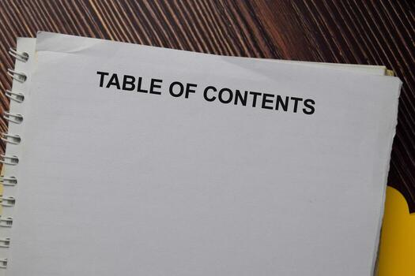
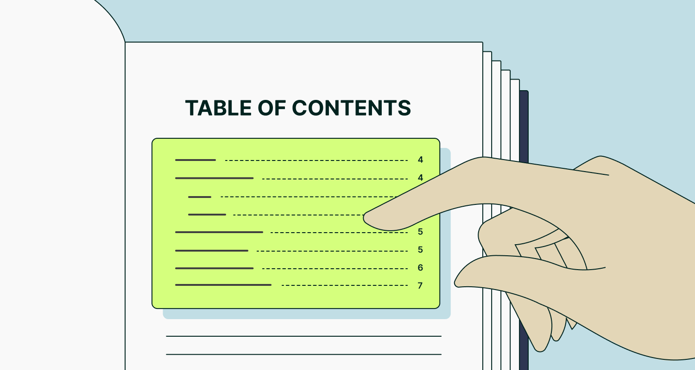
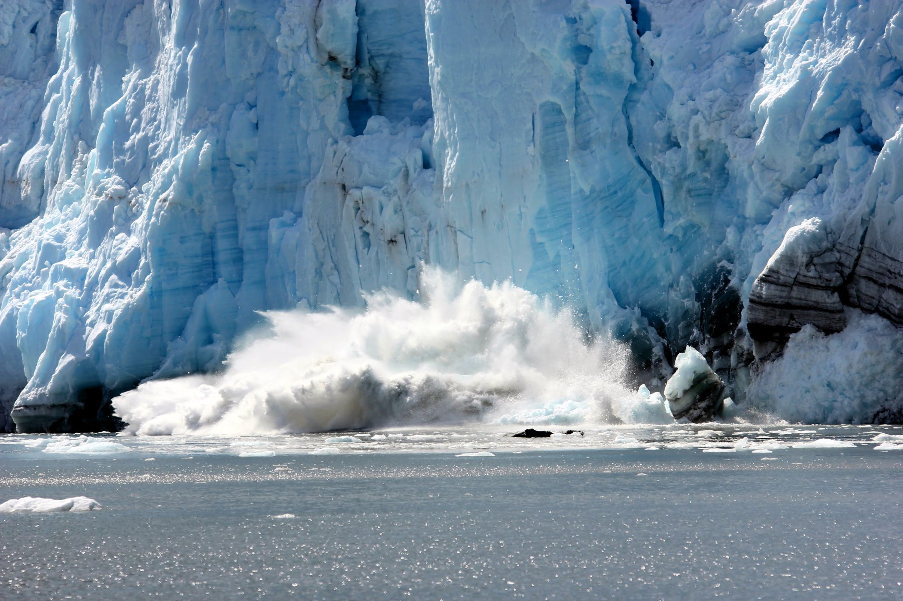

Table of Contents
Climate Change Crisis of the 1980sPage 4
Global Conflict in the Middle EastPage 6
World Issues MapPage 7
AI Revolution: Friend or Foe?Page 10
EditorialPage 11
BibliographyPage 12


4
Climate Change Crisis of the 1980s
Scientists sounded the alarm decades ago — few were listening

In the late 1970s and throughout the 1980s, a growing chorus of scientists began warning governments around the world that human industrial activity was fundamentally altering the planet's climate. Burning fossil fuels at an unprecedented rate was pushing carbon dioxide levels to historic highs, threatening Arctic ice sheets and coastal communities alike.
The warnings largely fell on deaf ears. Oil companies quietly funded research designed to cast doubt on the science, while governments focused on short-term economic growth. The decade ended with the planet measurably warmer than it had been at its start...etc.
6
Global Conflict in the Middle East
A region on fire: understanding decades of unrest

Throughout the 1990s and into the early 2000s, the Middle East became the focal point of international attention as long-simmering tensions erupted into open conflict across multiple nations. From the Persian Gulf War to ongoing disputes, the region demonstrated how quickly political conflicts escalate into humanitarian crises affecting millions.
Aid organizations reported staggering numbers of displaced persons, while diplomats scrambled to negotiate ceasefires that rarely held. The United Nations repeatedly called for restraint from all parties, but with limited success...etc.
10
AI Revolution: Friend or Foe?
Artificial intelligence is reshaping every corner of human life
The rapid rise of artificial intelligence technologies has left governments, businesses, and ordinary citizens scrambling to understand what the future holds. From self-driving cars to systems capable of writing essays or generating lifelike images, the technology has advanced far faster than experts predicted just a decade ago.
Proponents argue AI will eliminate drudgery and solve humanity's greatest challenges — from drug discovery to climate modeling. Critics warn of mass unemployment, algorithmic bias, and existential risks that humanity is not prepared to handle. Regulators worldwide have rushed to draft frameworks, but technology moves faster than legislation...etc.
11
Editorial
"After examining the most pressing world issues of our time, it seems that humanity has repeatedly failed to act on warnings given decades in advance. Instead of waiting for crises to reach a boiling point, we should invest in diplomacy, science, and international cooperation before disaster strikes. It is my opinion that the nations of the world must set aside short-term political interests and work together to protect the planet and its people for generations to come...etc."
— The Editors
Bibliography
Hansen, James. "Climate Change: The Science." NASA Goddard Institute, 15 June 1988, www.giss.nasa.gov.
United Nations. "Report on Global Conflict and Displacement." UN Refugee Agency, 22 April 2003, www.unhcr.org.
Metz, Cade. "The Race to Regulate Artificial Intelligence." The New York Times, 3 March 2024, www.nytimes.com.
Intergovernmental Panel on Climate Change. "Sixth Assessment Report." IPCC, 2022, www.ipcc.ch.
BBC News. "Middle East Conflict Explained." BBC, 12 October 2023, www.bbc.com/news.